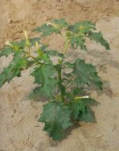
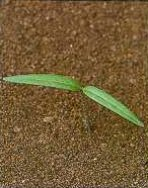
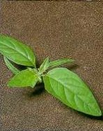

CSATTANÓ MASZLAG
DATURA STRAMONIUM L. (DATST)
ÉLETFORMA: T4
TERMÉS: Termése ovális, tüskés, négyrekeszű, a négy
kopács csúcson való leválásával nyíló tok. A mag széles félkör vagy vese
alakú, oldalról összenyomott. Sötétszürke, sötétbarna vagy fekete, finoman,
egyenletesen gyöngyözött, fénytelen. Átmérője 3,0-3,6 mm. Ezermagtömege 5,5-8,2 g.
A magvak életképessége 80-95%. Maghozama igen változó, átlag 3000 db
növényenként. Magvai április közepétől a nyár végéig jól csíráznak, fő
csírázási ideje májusban van. Magvait július végétől folyamatosan érleli.
CSÍRANÖVÉNY: Sziklevelei nyelesek, kb. 40 mm hosszúak,
csúcsuk tompán elkeskenyedők, sötétzöld színűek, kopaszok, ép szélűek. Az első
lomblevelek erezettek, a levélalapnál hullámosak.
KIFEJLETT NÖVÉNY: Egyéves, ék alakban fölegyenesedő
szárú, 30-180 cm magas, felső részében villásan elágazó, kopasz vagy pelyhesen
szőrözött. Lomblevelei tojásdadok, ép szélűek, a későbbiek durván fogazott
szélűek, nyelesek, szórt állásúak. Színük sötétzöld, a fonákuk világosabb
zöld. A virágok rövid kocsányokon az elágazásokban ülnek, nagyok, fehér színűek.
Este nyílnak és másnap este csukódnak be, kellemetlen pézsmaillatot árasztanak.
ELTERJEDÉSE: Egész Európában elterjedt. A nitrogénben
gazdag, közömbös kémhatású talajokat kedveli. Klimatikus igényeinek a mérsékelt
és a meleg éghajlat felel meg. Az egész növény erősen mérgező,
élelmiszernövények vagy takarmánynövények közé kerülve súlyos mérgezéseket
okozhat. Allelopatikus hatása is van. A talajban elbomló maradványai több növény
csírázását és a fiatal növények fejlődését erősen gátolják. Magvait és
leveleit drognak gyűjtik, helyenként termesztik.
 |
 |